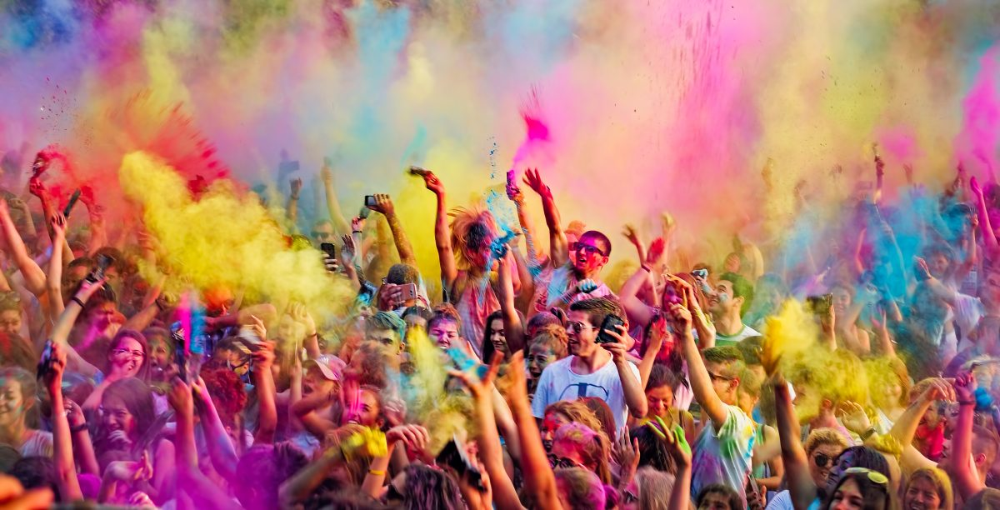
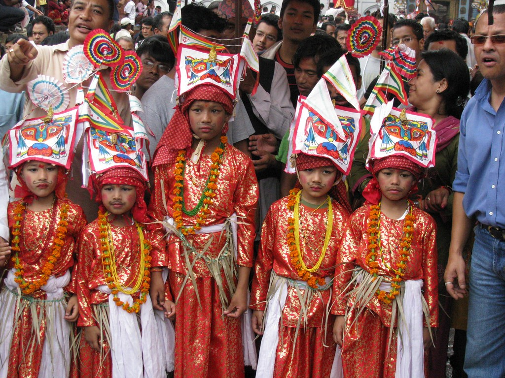

Festivals and Events in Nepal.
Dashain

Dashain Festival in Nepal, also known as Vijaya Dashami is the biggest and longest festival celebrated by Hindu Origin Nepalese all over the world. Dashain lies in the month of Ashwin (September/October). Ashwin is the happiest month, which brings joy and smile in the face of Nepalese people. During Dashain, all the Government and private institutes remain close for 10-15 days. People who are far away from the home get to visit their place. The main beauty of this festival is happiness where you get to meet your loved ones. Dashain falls in late September and early October. Also, the weather during this month is neither hot nor cold. so it is a favorable time to celebrate Nepal’s most auspicious festival.
Tihar

Tihar Festival in Nepal is, essentially, the equivalent of Deepavali in India and other Hindu lands. In fact, some Nepalese even refer to it as “Deepawali”. Its timing is based on the new moon of the Hindu month Kartika, but extends two days before and after that event. Thus, it is a five-day festival. On the Western calendar, it comes in either November or October, varying year to year. While each Hindu ethnic group in Nepal celebrates Tihar in slightly different ways, the main outlines remain the same everywhere. The season is called “the Festival of Lights” after the clay lanterns (“diyas”) that are lit and stacked around houses every night. People use pigmented rice, flour, sand, and flower petals to make “rangoli,” which are decorative patterns on the floors of homes and outdoor areas. They are meant to honor and welcome various Hindu gods and goddesses to the home. Also of high importance is the honoring of various animals during Tihar, which will be mentioned in more detail just below.
Holy
Holi is considered as one of the most revered and celebrated festivals of India and it is celebrated in almost every part of the country. It is also sometimes called as the “festival of love” as on this day people get to unite together forgetting all resentments and all types of bad feeling towards each other. The great Indian festival lasts for a day and a night, which starts in the evening of Purnima or the Full Moon Day in the month of Falgun. It is celebrated with the name Holika Dahan or Choti Holi on first evening of the festival and the following day is called Holi. In different parts of the country it is known with different names.
The vibrancy of colors is something that brings in a lot of positivity in our lives and Holi being the festival of colours is actually a day worth rejoicing. Holi is a famous Hindu festival that is celebrated in every part of India with utmost joy and enthusiasm. The ritual starts by lighting up the bonfire one day before the day of Holi and this process symbolizes the triumph of good over the bad. On the day of Holi people play with colours with their friends and families and in evening they show love and respect to their close ones with Abeer
Gai Jatra
Gai is cow and Jatra is Procession (Festival).Gai Jatra festival, the procession of cows, generally falls in the month of Bhadra, which correspond to English calendar months of August/September. This year Gai Jatra is on August 30, 2015. That is on Bhadra 13, 2072 BS. The festival of cows is one of the most popular festivals in Nepal. It is said people in ancient time started worshiping Yamaraj, "the god of death" on this day. However, the modern form of celebration of Gai Jatra came into existence in the medieval period of Nepal during the reign of Malla Kings. The present form of Gai Jatra with humorous acts, parody, comedy and was started by then King of Kathmandu Pratap Malla. He made Rani Pokhari (Pond) in the heart of Kathmandu and build a temple in the middle of the same pond.Traditionally every family who had death in the family during the preceding year must participate in a procession through the streets of Kathmandu leading a cow. If a cow is unavailable then a young kids dressed as cow is considered a fair substitute. However, there started tradition of leading a cow with kids in funny costumes.